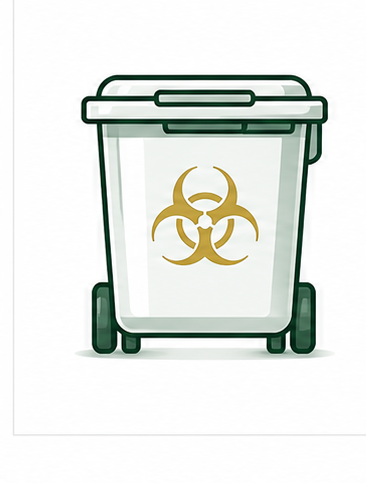
Medical Waste
Collection
Reliable scheduled pickups with compliant containers and documentation.
- DOT Compliant
- OSHA Compliant
- Manifest Tracking
- Containers Provided

Reliable pickup, documentation, and regulated waste support across New England.
Trusted by leading healthcare organizations across New England
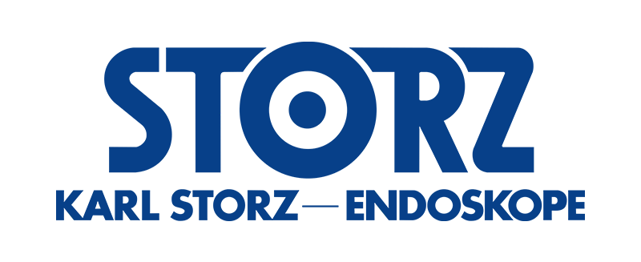
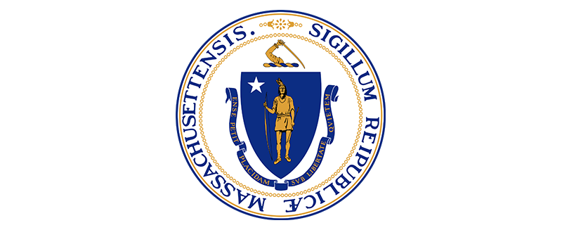
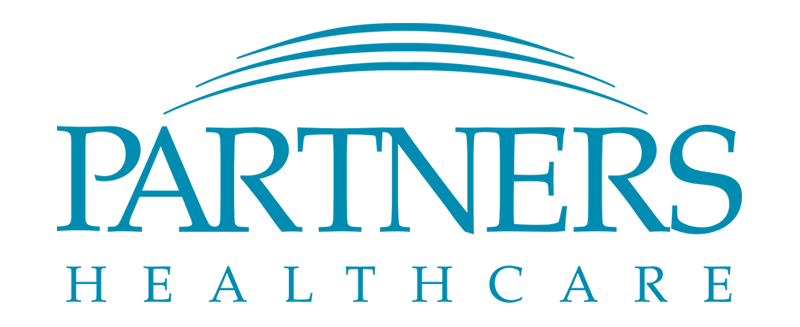
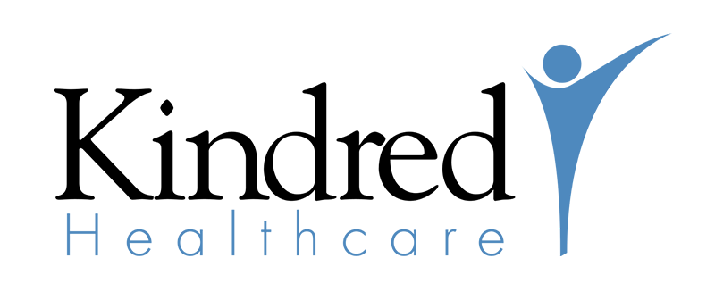
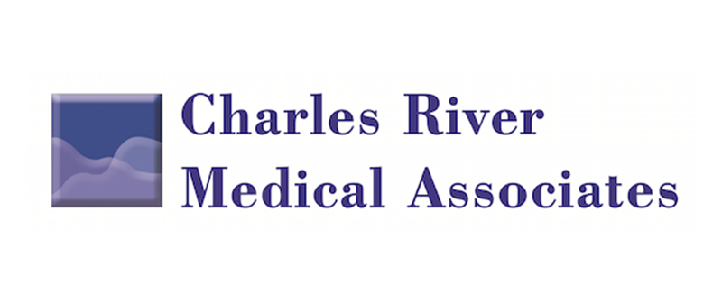
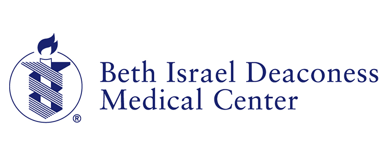
End-to-end services to keep your facility safe, compliant, and audit-ready.

Reliable scheduled pickups with compliant containers and documentation.
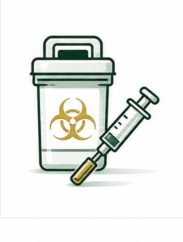
Safe disposal of regulated sharps with leak-proof containers.
Compliant disposal of expired, unused, and controlled substances.
On-site and online training to keep your team compliant and confident.
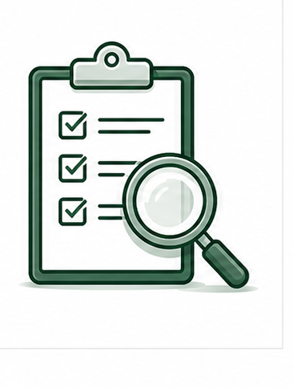
Identify risks, improve processes, and ensure regulatory readiness.
A secure, documented process every step of the way.

We deliver compliant containers and supplies directly to your facility.
We pick up on your schedule, on time, every time.
Licensed drivers transport waste using DOT-compliant vehicles.
Waste is treated at permitted facilities and full records are provided.
Replace confusing contracts with a medical waste program built around your facility, pickup schedule, documentation needs, and budget.
Container setupSizes, locations, labels, and replacement cadence.
Pickup scheduleReliable intervals matched to actual waste volume.
Records packageManifests, certificates, training, and audit documents.
Waste streamsRegulated medical, sharps, pharmaceutical, and special waste.
Tailored solutions for every type of healthcare provider.
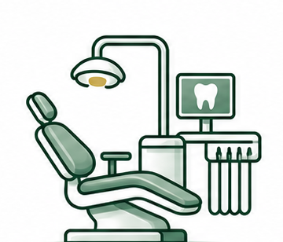
Dental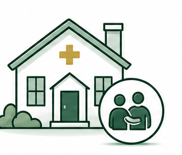
Long-TermLocal service with regional strength.
“Their personal service and compliance expertise give us complete peace of mind.”— Practice Administrator, Massachusetts

Identify risks, ensure compliance, and improve your program with a no-cost, no-obligation audit.